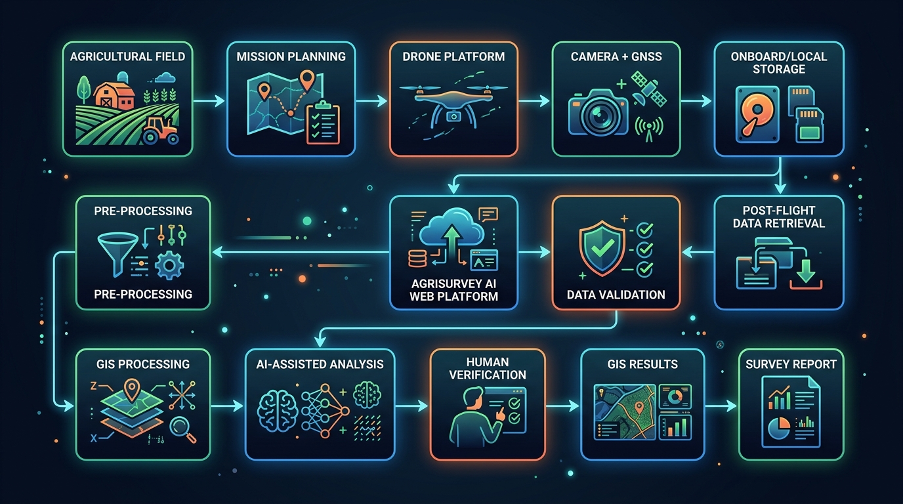

System Architecture
AgriSurvey AI — Post-Flight Data Processing Architecture

Architecture Flow
🌾 Agricultural FieldSource
📋 Mission PlanningPre-flight
🚁 Drone PlatformField Operation
📷 Camera + GNSSOn-board Capture
💾 Onboard / Local Data StorageOn-board Storage
⬇️ Post-Flight Data RetrievalPost-Flight
☁️ AgriSurvey AI Web PlatformPlatform
✅ Data ValidationAutomated
⚙️ Pre-processingAutomated
🗺️ GIS ProcessingAutomated
🤖 AI-Assisted AnalysisDemo Inference
👁️ Human VerificationRequired
📍 GIS ResultsOutput
📄 Survey ReportOutput